Code
pacman::p_load(
tidyverse, jsonlite, tidygraph, ggraph,
knitr, lubridate, patchwork, igraph,
ggiraph, readr, ggalluvial, visNetwork, gt, visNetwork, tidytext, ggrepel, ggplot2, DT
)In this exercise, we will be tackling Mini-case 1 of VAST Challenge 2026.
TenantThread is a property technology company that uses AI-powered systems to manage tenant engagement and communication processes. During a confidential merger project known as Project HarborCrest, strict embargo controls were implemented to prevent sensitive information from being released before the official announcement.
However, confidential merger-related information was leaked through AI-assisted communication channels prior to the embargo deadline. This raised concerns about whether the release was caused by deliberate actions, abnormal agent behaviour, or failures in the automated compliance system.
This mini-challenge focuses on analysing communication logs, agent interactions, and environmental events to reconstruct the sequence of events leading to the embargo breach.
This analysis aims to:
This section examines the Mini-Challenge 1 dataset and outlines the data preparation and exploratory steps performed prior to the visual analytics process.
The raw JSON files were imported and transformed into structured tabular datasets to support downstream temporal, behavioural and network-based analysis. A preliminary exploratory analysis was carried out to gain a clearer understanding of the dataset’s structure and relationships before moving on to a more in-depth investigation.
The analysis primarily uses packages from the tidyverse ecosystem for data preprocessing, transformation, and exploratory analysis. Additional visual analytics libraries are incorporated to support network visualisation, temporal analysis, and interactive graphical exploration.
You are required to install the R packages above, if necessary, before proceeding to the next step.
In the code chunk below, p_load() of pacman package is used to load the R packages into R environment
pacman::p_load(
tidyverse, jsonlite, tidygraph, ggraph,
knitr, lubridate, patchwork, igraph,
ggiraph, readr, ggalluvial, visNetwork, gt, visNetwork, tidytext, ggrepel, ggplot2, DT
)In addition to regular data wrangling packages, various specialized visual analytics libraries are included to facilitate network analysis, temporal investigation, and interactive visualization of the Mini-Challenge 1 dataset.
The tidygraph, ggraph, and igraph packages are mainly utilized for analyzing communication networks and visualizing relationships among agents and systems related to the embargo breach.
The lubridate library facilitates temporal analysis by handling timestamps, while ggiraph boosts interactivity in graphical results. The patchwork package serves to merge various visualizations into cohesive analytical layouts. Thus, these libraries enable exploratory analysis and visual storytelling to reveal behavioral trends and communication dynamics in the AI-supported business setting.
packages <- tribble(
~Library, ~Description,
"tidyverse", "Data preprocessing, transformation, and wrangling.",
"jsonlite", "Importing and parsing JSON communication datasets.",
"tidygraph", "Graph and network data manipulation.",
"ggraph", "Network visualisation and graph layouts.",
"igraph", "Network analytics, centrality calculations, and relationship analysis.",
"ggplot2", "Creating static statistical graphics and customised data visualisations.",
"lubridate", "Date-time processing and temporal analysis.",
"patchwork", "Combining multiple visualisations into cohesive analytical layouts.",
"ggiraph", "Interactive graphical visualisations.",
"readr", "Efficient import of structured communication datasets.",
"ggalluvial", "Visualising communication flow transitions and pathway structures.",
"visNetwork", "Interactive network and ego-network visualisations.",
"tidytext", "Text mining, TF-IDF analysis, and communication topic extraction.",
"ggrepel", "Improved label placement and overlap avoidance in visualisations.",
"DT", "Creating interactive tables for ranked summaries and evidence tables.",
"gt", "Formatting analytical summary tables and evidence matrices.",
"knitr", "Dynamic report generation and reproducible reporting in Quarto."
)
knitr::kable(packages)| Library | Description |
|---|---|
| tidyverse | Data preprocessing, transformation, and wrangling. |
| jsonlite | Importing and parsing JSON communication datasets. |
| tidygraph | Graph and network data manipulation. |
| ggraph | Network visualisation and graph layouts. |
| igraph | Network analytics, centrality calculations, and relationship analysis. |
| ggplot2 | Creating static statistical graphics and customised data visualisations. |
| lubridate | Date-time processing and temporal analysis. |
| patchwork | Combining multiple visualisations into cohesive analytical layouts. |
| ggiraph | Interactive graphical visualisations. |
| readr | Efficient import of structured communication datasets. |
| ggalluvial | Visualising communication flow transitions and pathway structures. |
| visNetwork | Interactive network and ego-network visualisations. |
| tidytext | Text mining, TF-IDF analysis, and communication topic extraction. |
| ggrepel | Improved label placement and overlap avoidance in visualisations. |
| DT | Creating interactive tables for ranked summaries and evidence tables. |
| gt | Formatting analytical summary tables and evidence matrices. |
| knitr | Dynamic report generation and reproducible reporting in Quarto. |
For this exercise, the MC1_final_00.json dataset from Mini-Challenge 1 is used. Before getting started, the dataset should be stored in the data/MC1/ sub-folder.
This is a large data set. Please ensure that data has been added into the .gitignore file.
In the code chunk below, fromJSON() from the jsonlite package is used to import the MC1 dataset into the R environment.
mc1_data <- jsonlite::read_json(
"MC1_final_00.json",
simplifyVector = FALSE
)The imported JSON object is then saved as an .rds file to improve loading efficiency for subsequent analysis.
dir.create("data/MC1", recursive = TRUE, showWarnings = FALSE)
readr::write_rds(mc1_data, "data/MC1/mc1_data.rds")The nested communication records were subsequently extracted and transformed into a structured tabular dataset suitable for downstream exploratory and visual analytics.
communications <- map_dfr(mc1_data$rounds, function(round) {
map_dfr(round$communications, function(msg) {
tibble(
round_hour = round$hour,
message_id = msg$message_id,
agent_id = msg$agent_id,
agent_role = msg$agent_role,
channel = msg$channel,
message_type = msg$message_type,
recipients = paste(msg$recipients, collapse = ", "),
content = msg$content,
timestamp = msg$timestamp
)
})
})Before conducting visual analytics, an initial exploration of the transformed communication dataset was performed to understand its structure, dimensions, and variable composition. This helps identify the key fields available for analysing communication behaviour, agent interactions, and temporal activity patterns.
The glimpse() function is used to provide a compact overview of the transformed communication dataset.
glimpse(communications)Rows: 912
Columns: 9
$ round_hour <chr> "2046-05-17T09:00:00", "2046-05-17T09:00:00", "2046-05-17…
$ message_id <chr> "20460517_00_001", "20460517_00_002", "20460517_00_003", …
$ agent_id <chr> "legal_agent", "quality_agent", "quality_agent", "quality…
$ agent_role <chr> "legal", "platform_trust", "platform_trust", "platform_tr…
$ channel <chr> "comms_huddle", "comms_huddle", "comms_huddle", "comms_hu…
$ message_type <chr> "broadcast", "broadcast", "broadcast", "broadcast", "broa…
$ recipients <chr> "ALL", "ALL", "ALL", "ALL", "ALL", "ALL", "ALL", "ALL", "…
$ content <chr> "Morning. Let's keep today focused — Q2 planning kickoff.…
$ timestamp <chr> "2046-05-17T09:00:00", "2046-05-17T09:01:00", "2046-05-17…dataset_summary <- tibble(
Measure = c("Number of communication records",
"Number of variables",
"Number of unique agents",
"Number of communication channels",
"Number of simulation rounds"),
Value = c(
nrow(communications),
ncol(communications),
n_distinct(communications$agent_id),
n_distinct(communications$channel),
n_distinct(communications$round_hour)
)
)
knitr::kable(dataset_summary)| Measure | Value |
|---|---|
| Number of communication records | 912 |
| Number of variables | 9 |
| Number of unique agents | 7 |
| Number of communication channels | 6 |
| Number of simulation rounds | 23 |
The transformed communication dataset contains message-level records extracted from the MC1 JSON file. Each row represents one communication event, including the sender, channel, message type, timestamp, and message content.
An initial assessment of data quality was carried out to identify missing values and verify the completeness of the transformed communication dataset prior to executing subsequent visual analytics.
missing_summary <- communications %>%
summarise(across(everything(), ~sum(is.na(.)))) %>%
pivot_longer(
cols = everything(),
names_to = "Variable",
values_to = "Missing_Count"
)
knitr::kable(missing_summary)| Variable | Missing_Count |
|---|---|
| round_hour | 0 |
| message_id | 0 |
| agent_id | 0 |
| agent_role | 0 |
| channel | 0 |
| message_type | 0 |
| recipients | 0 |
| content | 0 |
| timestamp | 0 |
The transformed communication dataset does not contain substantial missing values and is sufficiently complete for downstream temporal, behavioural, and network-based analysis.
This section engineers additional variables required to reconstruct the sequence of events, examine communication relationships, and identify behavioural indicators that may have contributed to the embargo breach. The engineered features are designed to support temporal, behavioural, and network-based visual analytics.
To reconstruct how the embargo breach unfolded, additional time-based variables were engineered from the original communication timestamps. These variables support event sequencing, communication timeline analysis, and identification of activity patterns before the inappropriate release.
communications_clean <- communications %>%
mutate(
timestamp = ymd_hms(timestamp),
round_hour = ymd_hms(round_hour),
communication_date = as_date(timestamp),
communication_hour = hour(timestamp),
communication_day = wday(timestamp, label = TRUE),
communication_period = case_when(
communication_hour >= 6 & communication_hour < 12 ~ "Morning",
communication_hour >= 12 & communication_hour < 18 ~ "Afternoon",
communication_hour >= 18 & communication_hour < 24 ~ "Evening",
TRUE ~ "Late Night"
),
days_before_embargo_breach =
as.numeric(as_date("2046-06-05") - communication_date),
near_breach_window = case_when(
days_before_embargo_breach <= 2 ~ "Critical Period",
days_before_embargo_breach <= 5 ~ "Escalation Period",
TRUE ~ "Normal Period"
),
message_sequence = row_number()
)The engineered temporal variables are verified below.
communications_clean %>%
select(
timestamp,
communication_date,
communication_hour,
communication_day,
communication_period,
days_before_embargo_breach,
near_breach_window,
message_sequence
) %>%
head()# A tibble: 6 × 8
timestamp communication_date communication_hour communication_day
<dttm> <date> <int> <ord>
1 2046-05-17 09:00:00 2046-05-17 9 Thu
2 2046-05-17 09:01:00 2046-05-17 9 Thu
3 2046-05-17 09:02:00 2046-05-17 9 Thu
4 2046-05-17 09:03:00 2046-05-17 9 Thu
5 2046-05-17 09:04:00 2046-05-17 9 Thu
6 2046-05-17 09:05:00 2046-05-17 9 Thu
# ℹ 4 more variables: communication_period <chr>,
# days_before_embargo_breach <dbl>, near_breach_window <chr>,
# message_sequence <int>The days_before_embargo_breach variable ties the communication timeline to the breach date of June 5, 2046, facilitating subsequent analysis to contrast typical communication patterns with actions nearer to the embargo violation.
To investigate how embargoed information may have propagated across different communication environments, communication channels were grouped into broader communication scopes based on their risk of exposure.
The classification distinguishes between public-facing communication, private exchanges, internal coordination discussions, and side-channel interactions. This supports downstream analysis of whether sensitive information gradually transitioned from internal discussions into externally visible communication channels prior to the embargo breach.
The unique communication channels are first examined to understand the types of communication environments present in the dataset before defining broader communication scope categories.
communications_clean %>%
distinct(channel) %>%
arrange(channel) %>%
knitr::kable()| channel |
|---|
| anonymous_post |
| comms_huddle |
| official_post |
| one_on_one_chat |
| personal_post |
| side_huddle |
communications_clean <- communications_clean %>%
mutate(
communication_scope = case_when(
channel %in% c("official_post", "personal_post") ~ "Public",
channel %in% c("one_on_one_chat") ~ "Private",
channel %in% c("side_huddle") ~ "Side-channel",
channel %in% c("comms_huddle") ~ "Internal Group",
TRUE ~ "Other"
),
exposure_risk_level = case_when(
communication_scope == "Public" ~ "High Exposure",
communication_scope == "Side-channel" ~ "Moderate Exposure",
communication_scope == "Private" ~ "Low Exposure",
communication_scope == "Internal Group" ~ "Controlled Exposure",
TRUE ~ "Unknown"
),
is_public_channel = communication_scope == "Public"
)The communication scope classifications are verified below.
communications_clean %>%
count(
channel,
communication_scope,
exposure_risk_level
) %>%
arrange(desc(n)) %>%
knitr::kable()| channel | communication_scope | exposure_risk_level | n |
|---|---|---|---|
| comms_huddle | Internal Group | Controlled Exposure | 476 |
| one_on_one_chat | Private | Low Exposure | 248 |
| side_huddle | Side-channel | Moderate Exposure | 111 |
| personal_post | Public | High Exposure | 37 |
| official_post | Public | High Exposure | 28 |
| anonymous_post | Other | Unknown | 12 |
The engineered communication scope categories support downstream investigation of how merger-related information may have propagated across communication environments with different levels of exposure risk prior to the embargo breach.
To facilitate downstream network-oriented visual analytics, the transformed communication records were reshaped into node and edge formats appropriate for graph analysis.
The node table represents the communication participants within the simulation environment, whereas the edge table records the directional relationships between senders and receivers through various communication channels.
The communication recipients were subsequently separated to construct directional sender-recipient relationships suitable for network analysis.
communication_edges <- communications_clean %>%
separate_rows(recipients, sep = ", ") %>%
mutate(
source = str_trim(agent_id),
target = str_trim(recipients)
) %>%
filter(
!is.na(source),
!is.na(target),
source != "",
target != "",
target != "ALL"
) %>%
transmute(
source,
target,
channel,
communication_scope,
exposure_risk_level,
risk_signal_group,
timestamp
)The structure of the communication edges is examined below.
glimpse(communication_edges)Rows: 415
Columns: 7
$ source <chr> "legal_agent", "legal_agent", "legal_agent", "pr_i…
$ target <chr> "platform_trust", "pr", "social_manager", "legal",…
$ channel <chr> "side_huddle", "side_huddle", "side_huddle", "one_…
$ communication_scope <chr> "Side-channel", "Side-channel", "Side-channel", "P…
$ exposure_risk_level <chr> "Moderate Exposure", "Moderate Exposure", "Moderat…
$ risk_signal_group <chr> "High Signal", "High Signal", "High Signal", "Mode…
$ timestamp <dttm> 2046-06-05 09:03:00, 2046-06-05 09:03:00, 2046-06…The communication relationships were aggregated from both senders and recipients to ensure that all participants appearing in the edge table are represented in the network.
communication_nodes <- tibble(
node_id = unique(c(
communication_edges$source,
communication_edges$target
))
) %>%
left_join(
communications_clean %>%
distinct(agent_id, agent_role) %>%
rename(node_id = agent_id, role = agent_role),
by = "node_id"
) %>%
mutate(
role = replace_na(role, "Recipient / System")
)The structure of the communication nodes is examined below..
glimpse(communication_nodes)Rows: 14
Columns: 2
$ node_id <chr> "legal_agent", "pr_intern_agent", "social_media_agent", "inter…
$ role <chr> "legal", "pr_intern", "social_media", "intern", "pr", "platfor…The communication relationships were aggregated to calculate interaction intensity between sender-recipient pairs.
communication_edges_weighted <- communication_edges %>%
count(
source,
target,
communication_scope,
exposure_risk_level,
risk_signal_group,
name = "weight"
) %>%
mutate(
interaction_intensity = case_when(
weight >= 10 ~ "High Interaction",
weight >= 5 ~ "Moderate Interaction",
TRUE ~ "Low Interaction"
)
)head(communication_edges_weighted)# A tibble: 6 × 7
source target communication_scope exposure_risk_level risk_signal_group weight
<chr> <chr> <chr> <chr> <chr> <int>
1 inter… pr Private Low Exposure Low Signal 1
2 inter… pr Private Low Exposure Moderate Signal 7
3 judge… legal Private Low Exposure High Signal 1
4 legal… judge Private Low Exposure High Signal 1
5 legal… platf… Private Low Exposure High Signal 3
6 legal… platf… Private Low Exposure Low Signal 4
# ℹ 1 more variable: interaction_intensity <chr>The relationship between interaction intensity and behavioural risk signals is further examined below.
communication_edges_weighted %>%
count(
interaction_intensity,
risk_signal_group
) %>%
arrange(desc(n)) %>%
knitr::kable()| interaction_intensity | risk_signal_group | n |
|---|---|---|
| Low Interaction | Moderate Signal | 21 |
| Low Interaction | Low Signal | 18 |
| Low Interaction | High Signal | 13 |
| Moderate Interaction | High Signal | 10 |
| High Interaction | High Signal | 6 |
| Moderate Interaction | Moderate Signal | 6 |
| Low Interaction | No Signal | 4 |
| High Interaction | Moderate Signal | 1 |
| Moderate Interaction | Low Signal | 1 |
The overall size of the prepared network components is summarised below.
tibble(
Measure = c(
"Number of communication nodes",
"Number of communication edges",
"Number of weighted communication edges"
),
Value = c(
nrow(communication_nodes),
nrow(communication_edges),
nrow(communication_edges_weighted)
)
) %>%
knitr::kable()| Measure | Value |
|---|---|
| Number of communication nodes | 14 |
| Number of communication edges | 415 |
| Number of weighted communication edges | 80 |
The engineered node and edge structures support downstream investigation of communication flow, interaction intensity, and potential information propagation pathways associated with the embargo breach.
The prepared communication nodes and edges were subsequently combined into a directed communication network suitable for downstream graph visualization and network analysis.
The communication network records the directional flow of information among participants and enables further examination of communication trends, interaction strength, and possible pathways of information dissemination linked to the embargo violation.
communication_network <- tbl_graph(
nodes = communication_nodes,
edges = communication_edges_weighted,
directed = TRUE
)The structure of the constructed communication network is examined below.
communication_network# A tbl_graph: 14 nodes and 80 edges
#
# A directed acyclic multigraph with 1 component
#
# Node Data: 14 × 2 (active)
node_id role
<chr> <chr>
1 legal_agent legal
2 pr_intern_agent pr_intern
3 social_media_agent social_media
4 intern_agent intern
5 pr_agent pr
6 quality_agent platform_trust
7 judge_agent judge
8 platform_trust Recipient / System
9 pr Recipient / System
10 social_manager Recipient / System
11 legal Recipient / System
12 intern Recipient / System
13 pr_intern Recipient / System
14 judge Recipient / System
#
# Edge Data: 80 × 7
from to communication_scope exposure_risk_level risk_signal_group weight
<int> <int> <chr> <chr> <chr> <int>
1 4 9 Private Low Exposure Low Signal 1
2 4 9 Private Low Exposure Moderate Signal 7
3 7 11 Private Low Exposure High Signal 1
# ℹ 77 more rows
# ℹ 1 more variable: interaction_intensity <chr>The constructed communication network serves as the foundation for subsequent visual analytics involving communication flow, network centrality, behavioural escalation, and potential dissemination pathways related to the inappropriate release.
This section investigates whether warning signals were observable before the inappropriate release occurred. The analysis examines communication activity, behavioural risk signals, communication environments, exposure-risk behaviours, and high-risk communication pathways across the Normal, Escalation, and Critical Periods.
The objective is to determine whether the release emerged suddenly or was preceded by measurable behavioural and communication changes. Findings from this section provide the initial evidence base for identifying potential risk escalation patterns before reconstructing the communication network in Section 5.
This section investigates whether communication activity exhibited unusual escalation patterns approaching the embargo breach on June 5, 2046.
The analysis focuses on identifying:
These behavioural patterns may provide early evidence of communication instability, coordination stress, or weakening embargo controls prior to the breach.
communication_daily <- communications_clean %>%
count(communication_date)
ggplot(
communication_daily,
aes(x = communication_date, y = n)
) +
annotate(
"rect",
xmin = as.Date("2046-06-03"),
xmax = as.Date("2046-06-05"),
ymin = -Inf,
ymax = Inf,
alpha = 0.1,
fill = "red"
) +
geom_line(linewidth = 1.2) +
geom_point(size = 2.5) +
geom_vline(
xintercept = as.Date("2046-06-05"),
linetype = "dashed",
colour = "red"
) +
annotate(
"text",
x = as.Date("2046-06-05"),
y = max(communication_daily$n, na.rm = TRUE),
label = "Embargo Breach",
hjust = 1.05,
colour = "red"
) +
scale_y_log10() +
labs(
title = "Daily Communication Activity Prior to the Embargo Breach",
x = "Communication Date",
y = "Number of Communications (Log Scale)"
) +
theme_minimal()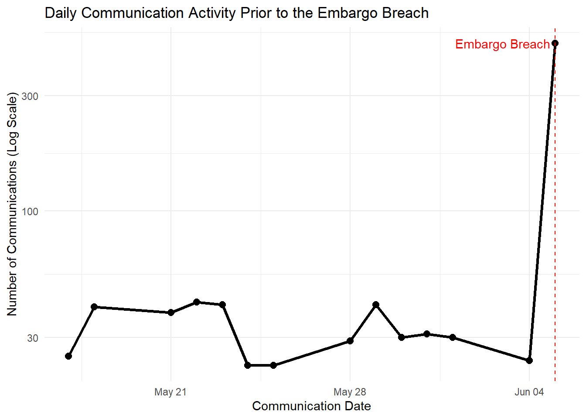
Communication activity remained relatively stable at approximately 25–40 messages per day before increasing sharply to more than 500 messages on 5 June 2046.
This represents a substantial departure from historical communication levels and indicates a sudden escalation in coordination activity immediately before the embargo breach.
No comparable spikes were observed during the earlier investigation period, suggesting that the communication surge was unique to the breach window.
The timing of this escalation indicates that abnormal communication volume may have served as an observable warning signal prior to the inappropriate release.
risk_signal_timeline <- communications_clean %>%
count(
communication_date,
risk_signal_group
)
risk_signal_timeline$risk_signal_group <- factor(
risk_signal_timeline$risk_signal_group,
levels = c(
"No Signal",
"Low Signal",
"Moderate Signal",
"High Signal"
)
)
ggplot(
risk_signal_timeline,
aes(
x = communication_date,
y = n,
fill = risk_signal_group
)
) +
annotate(
"rect",
xmin = as.Date("2046-06-03"),
xmax = as.Date("2046-06-05"),
ymin = -Inf,
ymax = Inf,
alpha = 0.1,
fill = "red"
) +
geom_col(position = "stack") +
geom_vline(
xintercept = as.Date("2046-06-05"),
linetype = "dashed",
colour = "red"
) +
labs(
title = "Behavioural Risk Signals Leading Up to the Embargo Breach",
subtitle = "Stacked daily risk signals highlight escalation before the inappropriate release",
x = "Communication Date",
y = "Number of Communications",
fill = "Risk Signal"
) +
theme_minimal()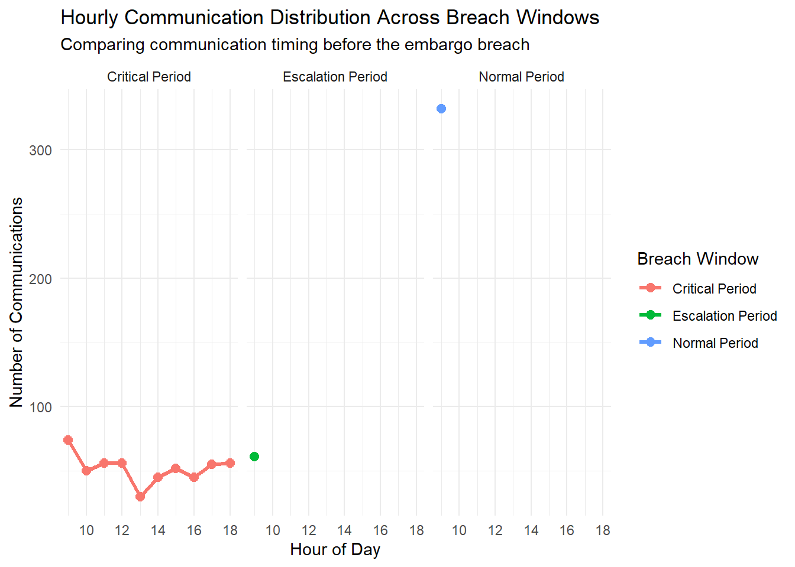
Prior to the Critical Period, most communications were classified as No Signal or Low Signal, indicating relatively routine operational activity.
On 5 June 2046, total communication volume increased to nearly 500 messages while Moderate Signal and High Signal communications increased substantially.
The simultaneous increase in communication volume and risk severity suggests that the breach was preceded by both behavioural escalation and elevated communication risk.
This pattern provides evidence that warning signals were observable before the inappropriate release rather than emerging only after the breach occurred.
This section investigates whether communication behaviour progressively shifted across different communication environments prior to the embargo breach on June 5, 2046.
The analysis focuses on examining changes in communication scope, exposure-risk escalation, and the potential breakdown of communication containment surrounding embargo-sensitive information.
communication_scope_distribution <- communications_clean %>%
count(
near_breach_window,
communication_scope
) %>%
group_by(near_breach_window) %>%
mutate(
percentage = n / sum(n),
percentage_label = scales::percent(
percentage,
accuracy = 1
)
)
ggplot(
communication_scope_distribution,
aes(
x = near_breach_window,
y = percentage,
fill = communication_scope
)
) +
geom_col(
position = "fill",
width = 0.7
) +
geom_text(
aes(label = percentage_label),
position = position_fill(vjust = 0.5),
size = 3,
colour = "white",
check_overlap = TRUE
) +
scale_y_continuous(
labels = scales::percent
) +
labs(
title = "Communication Environment Distribution Across Breach Windows",
subtitle = "Comparing communication environments before the embargo breach",
x = "Breach Window",
y = "Percentage of Communications",
fill = "Communication Scope"
) +
theme_minimal() +
theme(
plot.title = element_text(face = "bold"),
legend.position = "bottom"
)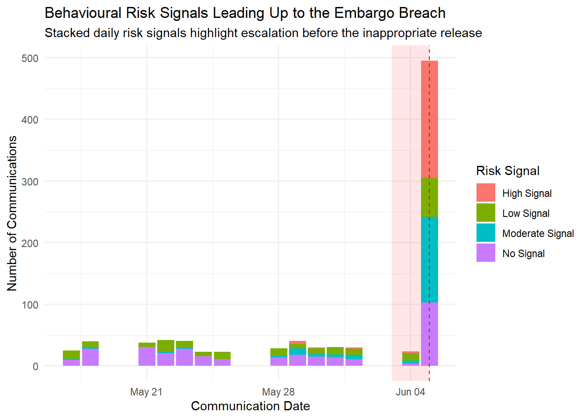
Internal group communication remained the dominant communication environment across all breach windows, accounting for approximately 61% of communication activity during the normal period, 62% during the escalation period, and 46% during the critical breach period.
A noticeable behavioural shift emerged during the critical breach period, where communication activity became more distributed across public-facing, side-channel, and other communication environments.
In particular, side-channel communication increased substantially from approximately 4% during the normal period to nearly 20% during the critical breach period, suggesting that communication behaviour became less contained closer to the inappropriate release.
The increasing presence of communication activity across higher-exposure environments near the breach may indicate weakening communication containment surrounding sensitive merger-related discussions.
exposure_risk_heatmap <- communications_clean %>%
count(
near_breach_window,
exposure_risk_level
) %>%
mutate(
near_breach_window = factor(
near_breach_window,
levels = c(
"Normal Period",
"Escalation Period",
"Critical Period"
)
),
exposure_risk_level = factor(
exposure_risk_level,
levels = c(
"Controlled Exposure",
"Low Exposure",
"Moderate Exposure",
"High Exposure",
"Unknown"
)
)
)
ggplot(
exposure_risk_heatmap,
aes(
x = near_breach_window,
y = exposure_risk_level,
fill = n
)
) +
geom_tile(
colour = "white",
linewidth = 0.6
) +
geom_text(
aes(label = n),
size = 4,
colour = "black"
) +
scale_fill_gradient(
low = "#dbe9f6",
high = "#08306b"
) +
labs(
title = "Exposure-risk Communication Across Breach Windows",
subtitle = "Comparing communication exposure levels before the embargo breach",
x = "Breach Window",
y = "Exposure-risk Level",
fill = "Messages"
) +
theme_minimal() +
theme(
plot.title = element_text(face = "bold"),
axis.text.x = element_text(angle = 0),
legend.position = "right"
)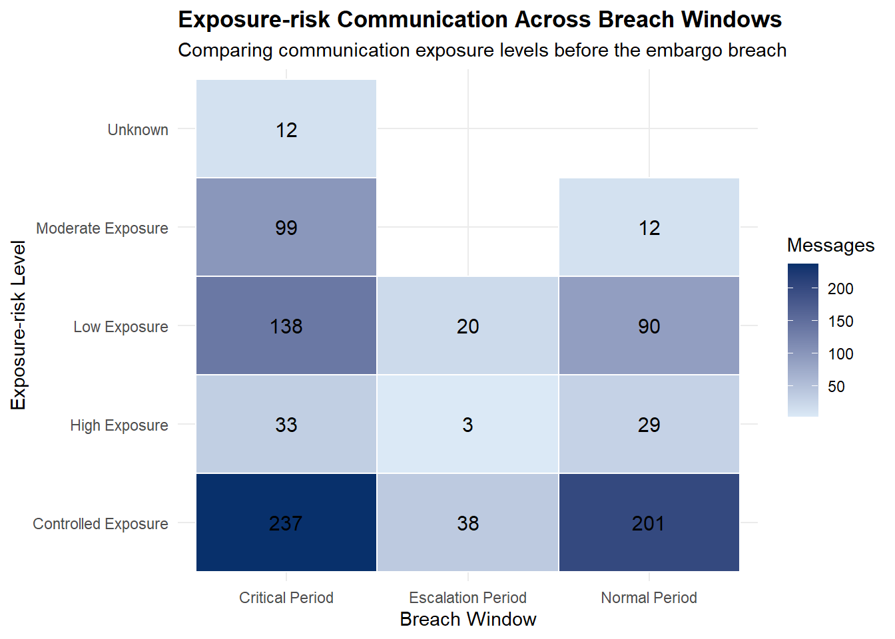
Controlled exposure communication accounted for the largest communication volume across all breach windows, increasing from 201 messages during the Normal Period to 237 messages during the Critical Period.
Low exposure communication activity also increased noticeably near the breach, rising from 90 messages during the Normal Period to 138 messages during the Critical Period.
Although high exposure communication represented a smaller share of total communication activity, it remained consistently present across all breach windows, with 29 messages recorded during the Normal Period and 33 messages during the Critical Period.
The Critical Period exhibited higher communication activity across most exposure-risk categories, while moderate- and high-exposure communications were already observable in earlier periods. This suggests that warning signals existed before the breach but intensified substantially as the inappropriate release approached.
This section investigates whether high-risk communication activity became increasingly concentrated among specific sender-recipient relationships prior to the embargo breach on June 5, 2046.
The analysis focuses on identifying repeated high-risk communication pathways, recurring coordination behaviour, and communication relationships associated with elevated behavioural risk signals.
These interaction patterns may provide early indications of concentrated coordination activity or communication routes that contributed to embargo-sensitive information bypassing normal containment controls.
top_high_risk_flows <- communication_edges_weighted %>%
filter(
risk_signal_group == "High Signal"
) %>%
arrange(desc(weight)) %>%
slice_head(n = 8) %>%
mutate(
source = str_replace_all(source, "_agent", ""),
target = str_replace_all(target, "_agent", ""),
source = str_replace_all(source, "_", " "),
target = str_replace_all(target, "_", " "),
source = str_to_title(source),
target = str_to_title(target)
)
ggplot(
top_high_risk_flows,
aes(
axis1 = source,
axis2 = target,
y = weight
)
) +
geom_alluvium(
aes(fill = risk_signal_group),
width = 1/12,
alpha = 0.8
) +
geom_stratum(
width = 1/12,
fill = "grey90",
colour = "grey40"
) +
geom_text(
stat = "stratum",
aes(label = after_stat(stratum)),
size = 3
) +
scale_x_discrete(
limits = c("Source", "Target"),
expand = c(.1, .1)
) +
labs(
title = "High-risk Communication Pathways Prior to the Embargo Breach",
subtitle = "Repeated high-risk sender-recipient pathways by interaction frequency",
x = "",
y = "Interaction Frequency",
fill = "Risk Signal"
) +
theme_minimal() +
theme(
plot.title = element_text(face = "bold"),
legend.position = "bottom"
)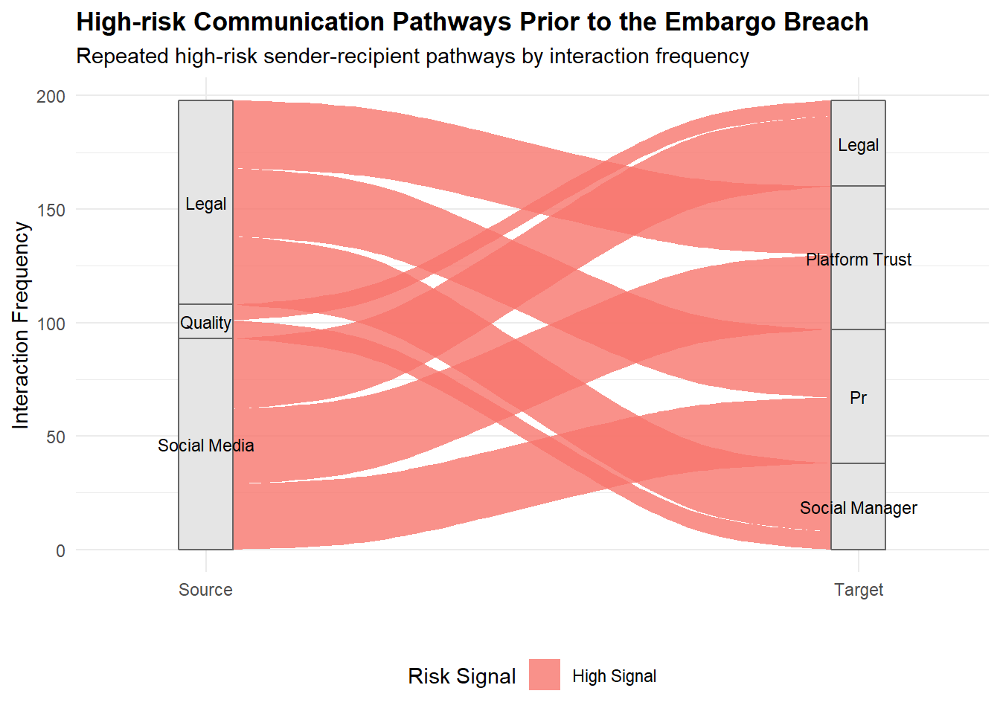
High-risk communications were concentrated among a small number of sender-recipient pathways rather than being distributed across the wider communication network.
Legal, Social Media, PR, and Platform Trust appeared most frequently within the strongest high-risk pathways, indicating that elevated-risk discussions were largely confined to a core operational group.
Several pathways showed repeated interactions between the same actors, suggesting ongoing coordination rather than isolated high-risk messages.
The concentration of elevated-risk communications within this tightly connected cluster highlights potential channels through which embargo-sensitive information could have propagated prior to the inappropriate release.
This section explores how high-risk communication relationships evolved during the critical breach period approaching the embargo violation on June 5, 2046.
Rather than visualising the entire communication system, the analysis focuses specifically on repeated high-risk communication pathways observed near the breach. This helps identify whether communication behaviour became increasingly concentrated among a smaller group of communication participants during the critical period.
By examining the structure of the high-risk communication network, this section aims to identify repeated coordination pathways, influential communication participants, and interaction patterns that may have contributed to embargo-sensitive information bypassing normal communication controls.
critical_high_risk_edges <- communication_edges %>%
filter(
risk_signal_group == "High Signal",
as.Date(timestamp) >= as.Date("2046-06-03")
) %>%
count(
source,
target,
name = "weight"
) %>%
arrange(desc(weight)) %>%
slice_head(n = 25) %>%
mutate(
source_label = source %>%
str_replace_all("_agent", "") %>%
str_replace_all("_", " ") %>%
str_to_title(),
target_label = target %>%
str_replace_all("_agent", "") %>%
str_replace_all("_", " ") %>%
str_to_title()
)
vis_nodes <- tibble(
id = unique(c(
critical_high_risk_edges$source_label,
critical_high_risk_edges$target_label
))
) %>%
mutate(
label = id,
group = case_when(
str_detect(str_to_lower(id), "legal") ~ "Legal",
str_detect(str_to_lower(id), "social") ~ "Social Media",
str_detect(str_to_lower(id), "pr") ~ "PR",
str_detect(str_to_lower(id), "platform|trust") ~ "Platform Trust",
TRUE ~ "Other"
),
value = 20
)
vis_edges <- critical_high_risk_edges %>%
transmute(
from = source_label,
to = target_label,
value = weight,
title = paste("Interaction Frequency:", weight),
arrows = "to"
)
visNetwork(
vis_nodes,
vis_edges,
height = "600px",
width = "100%"
) %>%
visGroups(groupname = "Legal", color = "#fb8072") %>%
visGroups(groupname = "Social Media", color = "#80b1d3") %>%
visGroups(groupname = "PR", color = "#b3de69") %>%
visGroups(groupname = "Platform Trust", color = "#bebada") %>%
visGroups(groupname = "Other", color = "#d9d9d9") %>%
visEdges(
smooth = TRUE,
color = list(color = "#cb181d", opacity = 0.55)
) %>%
visOptions(
highlightNearest = TRUE,
nodesIdSelection = TRUE
) %>%
visInteraction(
navigationButtons = TRUE,
dragNodes = TRUE,
zoomView = TRUE
) %>%
visLayout(randomSeed = 608)High-risk communication activity became increasingly concentrated within a smaller group of participants during the Critical Period, indicating that elevated-risk interactions were no longer distributed across the broader communication network.
Legal, PR, Social Media, and Platform Trust appeared repeatedly within the core high-risk communication cluster, suggesting that embargo-sensitive discussions were largely confined to a closely connected operational group.
Several communication pathways displayed substantially thicker directional flows, particularly among Legal, PR, and Social Media participants, indicating sustained coordination rather than isolated one-off interactions.
Intern and Judge remained comparatively less connected to the central high-risk cluster, while the dense concentration of repeated interactions among the core participants suggests that embargo-sensitive information may have circulated through a small but highly interconnected communication network prior to the inappropriate release.
This section investigates whether earlier elevated-risk communication patterns were already present before the critical breach period on June 5, 2046.
Instead of focusing only on final high-risk communication behaviour, the analysis compares selected warning indicators before and during the critical period.
warning_indicator_summary <- communications_clean %>%
mutate(
communication_date = as.Date(timestamp),
breach_period = case_when(
communication_date < as.Date("2046-06-03") ~ "Before Critical Period",
TRUE ~ "Critical Period"
)
) %>%
group_by(breach_period) %>%
summarise(
`Moderate-risk communications` = sum(
risk_signal_group == "Moderate Signal",
na.rm = TRUE
),
`High-risk communications` = sum(
risk_signal_group == "High Signal",
na.rm = TRUE
),
`Moderate + high-risk communications` =
`Moderate-risk communications` + `High-risk communications`,
`Public / side-channel communications` = sum(
communication_scope %in% c("Public", "Side-channel"),
na.rm = TRUE
),
.groups = "drop"
) %>%
complete(
breach_period = c(
"Before Critical Period",
"Critical Period"
),
fill = list(
`Moderate-risk communications` = 0,
`High-risk communications` = 0,
`Moderate + high-risk communications` = 0,
`Public / side-channel communications` = 0
)
) %>%
pivot_longer(
cols = -breach_period,
names_to = "warning_indicator",
values_to = "count"
) %>%
mutate(
breach_period = factor(
breach_period,
levels = c(
"Before Critical Period",
"Critical Period"
)
),
warning_indicator = factor(
warning_indicator,
levels = c(
"Public / side-channel communications",
"Moderate-risk communications",
"High-risk communications",
"Moderate + high-risk communications"
)
)
)
ggplot(
warning_indicator_summary,
aes(
x = warning_indicator,
y = count,
fill = breach_period
)
) +
geom_col(
position = position_dodge(width = 0.75),
width = 0.65
) +
geom_text(
aes(label = scales::comma(count)),
position = position_dodge(width = 0.75),
hjust = -0.15,
size = 3
) +
coord_flip() +
scale_fill_manual(
values = c(
"Before Critical Period" = "#737373",
"Critical Period" = "#cb181d"
)
) +
scale_y_continuous(
expand = expansion(mult = c(0, 0.18))
) +
labs(
title = "Early Warning Indicators Before and During the Critical Period",
subtitle = "Comparing elevated-risk signals before and near the breach",
x = "",
y = "Number of Communications",
fill = "Breach Period"
) +
theme_minimal() +
theme(
plot.title = element_text(face = "bold"),
legend.position = "bottom"
)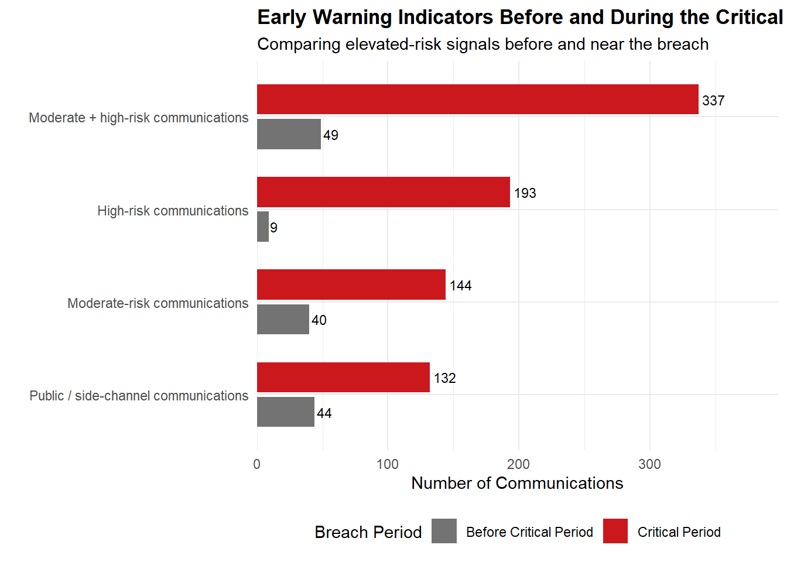
To quantify the visual comparison, the warning indicators are summarised below to show the scale of escalation from the earlier period to the critical breach period.
warning_escalation_summary <- warning_indicator_summary %>%
select(
breach_period,
warning_indicator,
count
) %>%
pivot_wider(
names_from = breach_period,
values_from = count,
values_fill = 0
) %>%
mutate(
`Increase` = `Critical Period` - `Before Critical Period`,
`Escalation Multiplier` = if_else(
`Before Critical Period` == 0,
NA_real_,
`Critical Period` / `Before Critical Period`
),
`Escalation Multiplier` = case_when(
is.na(`Escalation Multiplier`) ~ "New signal",
TRUE ~ paste0(round(`Escalation Multiplier`, 1), "x")
),
`Analytical Interpretation` = case_when(
warning_indicator == "High-risk communications" ~
"Severe risk signals intensified sharply during the critical period.",
warning_indicator == "Moderate + high-risk communications" ~
"Overall elevated-risk behaviour was present earlier but escalated strongly near the breach.",
warning_indicator == "Moderate-risk communications" ~
"Earlier moderate warning signs existed but became more pronounced during the critical period.",
warning_indicator == "Public / side-channel communications" ~
"Communication exposure increased, suggesting weaker containment near the breach.",
TRUE ~ "Review required."
)
) %>%
arrange(desc(`Critical Period`))
warning_escalation_summary %>%
rename(
`Warning Indicator` = warning_indicator
) %>%
knitr::kable(
caption = "Warning indicator escalation summary before and during the critical breach period"
)| Warning Indicator | Before Critical Period | Critical Period | Increase | Escalation Multiplier | Analytical Interpretation |
|---|---|---|---|---|---|
| Moderate + high-risk communications | 49 | 337 | 288 | 6.9x | Overall elevated-risk behaviour was present earlier but escalated strongly near the breach. |
| High-risk communications | 9 | 193 | 184 | 21.4x | Severe risk signals intensified sharply during the critical period. |
| Moderate-risk communications | 40 | 144 | 104 | 3.6x | Earlier moderate warning signs existed but became more pronounced during the critical period. |
| Public / side-channel communications | 44 | 132 | 88 | 3x | Communication exposure increased, suggesting weaker containment near the breach. |
Prior elevated-risk communication patterns existed before the critical breach timeframe, with 49 moderate-to-high risk communications recorded before June 3, 2046. This suggests that warning signs existed earlier, but at a much lower level.
The critical period demonstrated a significant rise in elevated-risk communication, jumping from 49 to 337 moderate-to-high risk communications. This signifies a 6.9 times increase, showing that risk signals became significantly more apparent close to the breach.
High-risk communication showed the strongest increase, rising from 9 earlier high-risk communications to 193 during the critical period. This 21.4 times increase suggests that severe communication risk intensified rapidly close to the inappropriate release.
Public and side-channel communication increased from 44 to 132 communications, indicating that communication risk was increasing in both volume and exposure within less-contained communication contexts.
This section summarizes the key behavioural and communication warning evidence discovered through the exploratory analysis. Instead of presenting an additional independent visual, the analysis encapsulates the changes in communication activities, behavioural risk signals, communication environments, high-risk pathways, and warning indicators that occurred before the embargo breach.
This provides an interim evidence base before moving into the detailed network reconstruction in Section 5.
section4_evidence_summary <- tibble(
`Analytical Area` = c(
"Communication Escalation",
"Behavioural Risk Escalation",
"Communication Environment Shift",
"Exposure-risk Behaviour",
"High-risk Communication Concentration",
"Earlier Warning Indicators"
),
`Key Evidence` = c(
"Daily messages increased from ~25–40 to over 500 on 5 Jun 2046.",
"Moderate- and high-risk signals increased substantially during the Critical Period.",
"Side-channel communication increased from 4% to 19%.",
"Moderate- and high-exposure communications existed before the breach and intensified later.",
"Legal, PR, Social Media, and Platform Trust became increasingly connected through repeated high-risk interactions.",
"Moderate-to-high risk communications increased from 49 to 337."
),
`MC1 Relevance` = c(
"Indicates abnormal activity before the breach.",
"Suggests observable warning signals before the release.",
"Indicates weakening communication containment.",
"Shows warning signals were already present.",
"Identifies key actors and relationships involved.",
"Explains why earlier signals may have been overlooked."
)
)Multiple warning signals emerged before the inappropriate release, including a surge in daily communication activity, increasing behavioural risk signals, growth in side-channel communications, and the concentration of high-risk communication pathways.
Earlier warning indicators were already observable before June 3, 2046, with 49 moderate-to-high risk communications recorded prior to the Critical Period. However, this increased sharply to 337 during the Critical Period.
The escalation was accompanied by increasingly concentrated communication activity involving Legal, PR, Social Media, and Platform Trust, suggesting that elevated-risk information flow became progressively more coordinated near the breach.
These findings suggest that the inappropriate release was preceded by a combination of behavioural escalation, communication pathway concentration, and elevated-risk interactions rather than a single isolated event.
While Section 4 identified warning signals and behavioural changes preceding the release, it did not explain how information moved between participants.
This section reconstructs the communication network during the breach period to identify the participants, relationships, and communication pathways associated with elevated-risk interactions. The analysis examines network structure, communication roles, bridge participants, thematic communication patterns, and behavioural deviations to understand how embargo-sensitive information may have circulated before the inappropriate release.
This section identifies the participant most actively connected within elevated-risk communication during the critical breach period.
Rather than showing the full communication network, the analysis focuses on the direct ego network of the most active participant. This helps reveal the immediate communication relationships surrounding the breach-related evidence trail. The ego-network visualisation approach was informed by the network analytics techniques presented in Chapter 29 (Network Analytics), which demonstrates how graph-based methods can be used to examine communication structures and participant relationships.
clean_actor <- function(x) {
x %>%
str_replace_all("_agent", "") %>%
str_replace_all("_", " ") %>%
str_squish() %>%
str_to_title()
}
breach_edges <- communication_edges %>%
mutate(
communication_date = as.Date(timestamp),
source = clean_actor(source),
target = clean_actor(target)
) %>%
filter(
communication_date >= as.Date("2046-06-03"),
risk_signal_group %in% c("Moderate Signal", "High Signal"),
!is.na(source),
!is.na(target),
source != "",
target != "",
source != target
) %>%
count(
source,
target,
risk_signal_group,
name = "weight"
) %>%
group_by(source, target) %>%
summarise(
weight = sum(weight),
high_signal_weight = sum(weight[risk_signal_group == "High Signal"], na.rm = TRUE),
moderate_signal_weight = sum(weight[risk_signal_group == "Moderate Signal"], na.rm = TRUE),
dominant_risk_signal = if_else(
high_signal_weight >= moderate_signal_weight,
"High Signal",
"Moderate Signal"
),
.groups = "drop"
)
node_activity <- bind_rows(
breach_edges %>%
transmute(id = source, activity = weight),
breach_edges %>%
transmute(id = target, activity = weight)
) %>%
group_by(id) %>%
summarise(
total_activity = sum(activity),
.groups = "drop"
)
anchor_actor <- node_activity %>%
arrange(desc(total_activity)) %>%
slice(1) %>%
pull(id)
ego_edges <- breach_edges %>%
filter(
source == anchor_actor |
target == anchor_actor
) %>%
arrange(desc(weight)) %>%
slice_head(n = 8)
ego_nodes <- tibble(
id = unique(c(ego_edges$source, ego_edges$target))
) %>%
left_join(
node_activity,
by = "id"
) %>%
mutate(
label = id,
value = total_activity,
group = case_when(
id == anchor_actor ~ "Anchor Participant",
id %in% c("Legal", "PR", "Social Media", "Platform Trust") ~ "Core Participant",
TRUE ~ "Peripheral Participant"
),
title = paste0(
"<b>", id, "</b><br>",
"Total weighted activity: ", total_activity
)
)
ego_edges_vis <- ego_edges %>%
transmute(
from = source,
to = target,
value = weight,
arrows = "to",
title = paste0(
"Interaction frequency: ", weight,
"<br>High-signal interactions: ", high_signal_weight,
"<br>Moderate-signal interactions: ", moderate_signal_weight
),
color = if_else(
dominant_risk_signal == "High Signal",
"#cb181d",
"#fdae6b"
)
)
visNetwork(
ego_nodes,
ego_edges_vis,
height = "760px",
width = "100%",
main = paste0(
"Breach-period Ego Network Anchored on ",
anchor_actor
)
) %>%
visGroups(
groupname = "Anchor Participant",
color = list(background = "#cb181d", border = "#99000d")
) %>%
visGroups(
groupname = "Core Participant",
color = list(background = "#6baed6", border = "#2171b5")
) %>%
visGroups(
groupname = "Peripheral Participant",
color = list(background = "#d9d9d9", border = "#969696")
) %>%
visEdges(
smooth = TRUE,
scaling = list(min = 1, max = 10)
) %>%
visNodes(
shape = "dot",
scaling = list(min = 28, max = 70),
font = list(
size = 26,
face = "bold"
)
) %>%
visOptions(
highlightNearest = TRUE,
nodesIdSelection = TRUE
) %>%
visInteraction(
navigationButtons = TRUE,
dragNodes = TRUE,
zoomView = TRUE
) %>%
visPhysics(
solver = "forceAtlas2Based",
stabilization = TRUE
) %>%
visLayout(
randomSeed = 608
)The ego network highlights Legal as the most actively connected participant within elevated-risk communication during the critical period.
The strongest breach-period links connect Legal with PR, Social Media, and Platform Trust, suggesting that the communication evidence trail was concentrated around a core operational group.
Thicker links represent repeated elevated-risk communication, while red links indicate pathways dominated by high-risk signals.
This provides a focused starting point for examining whether these participants acted as senders, receivers, or coordination hubs in the next section.
While the ego network identifies the participants most closely connected to Legal, it does not explain how these participants contributed to breach-period communication. The next section therefore examines whether these participants acted as coordinators, broadcasters, receivers, or peripheral actors within the elevated-risk communication network.
This section examines how participants contributed to elevated-risk communication during the critical breach period.
While Section 5.1 identified the key participants connected to the breach-period network, this analysis focuses on the function each participant performed within that network. Participants are classified according to their communication behaviour, allowing the analysis to distinguish between those who coordinated information flows, those who primarily disseminated information, and those who mainly received communications.
Examining these communication roles provides a clearer understanding of how information moved through the network and helps identify the actors who may have played an important part in allowing embargo-sensitive information to circulate prior to the inappropriate release.
clean_actor <- function(x) {
x %>%
str_replace_all("_agent", "") %>%
str_replace_all("_", " ") %>%
str_squish() %>%
str_to_title()
}
role_edges <- communication_edges %>%
mutate(
communication_date = as.Date(timestamp),
source = clean_actor(source),
target = clean_actor(target)
) %>%
filter(
communication_date >= as.Date("2046-06-03"),
risk_signal_group %in% c("Moderate Signal", "High Signal"),
!is.na(source),
!is.na(target),
source != "",
target != "",
source != target
) %>%
count(source, target, risk_signal_group, name = "weight") %>%
group_by(source, target) %>%
summarise(
weight = sum(weight),
high_signal_weight = sum(weight[risk_signal_group == "High Signal"], na.rm = TRUE),
moderate_signal_weight = sum(weight[risk_signal_group == "Moderate Signal"], na.rm = TRUE),
dominant_risk_signal = if_else(
high_signal_weight >= moderate_signal_weight,
"High Signal",
"Moderate Signal"
),
.groups = "drop"
) %>%
arrange(desc(weight)) %>%
slice_head(n = 18)
outgoing_activity <- role_edges %>%
group_by(source) %>%
summarise(outgoing_weight = sum(weight), .groups = "drop") %>%
rename(id = source)
incoming_activity <- role_edges %>%
group_by(target) %>%
summarise(incoming_weight = sum(weight), .groups = "drop") %>%
rename(id = target)
role_nodes <- tibble(
id = unique(c(role_edges$source, role_edges$target))
) %>%
left_join(outgoing_activity, by = "id") %>%
left_join(incoming_activity, by = "id") %>%
mutate(
outgoing_weight = replace_na(outgoing_weight, 0),
incoming_weight = replace_na(incoming_weight, 0),
total_activity = outgoing_weight + incoming_weight,
communication_role = case_when(
outgoing_weight >= median(outgoing_weight, na.rm = TRUE) &
incoming_weight >= median(incoming_weight, na.rm = TRUE) ~ "Coordinator",
outgoing_weight >= median(outgoing_weight, na.rm = TRUE) &
incoming_weight < median(incoming_weight, na.rm = TRUE) ~ "Broadcaster",
outgoing_weight < median(outgoing_weight, na.rm = TRUE) &
incoming_weight >= median(incoming_weight, na.rm = TRUE) ~ "Receiver",
TRUE ~ "Peripheral"
),
label = id,
value = total_activity,
group = communication_role,
title = paste0(
"<b>", id, "</b><br>",
"Role: ", communication_role, "<br>",
"Outgoing elevated-risk activity: ", outgoing_weight, "<br>",
"Incoming elevated-risk activity: ", incoming_weight, "<br>",
"Total weighted activity: ", total_activity
)
)
role_edges_vis <- role_edges %>%
transmute(
from = source,
to = target,
value = weight,
arrows = "to",
width = scales::rescale(weight, to = c(1, 8)),
title = paste0(
"<b>", source, " → ", target, "</b><br>",
"Interaction frequency: ", weight, "<br>",
"Dominant risk signal: ", dominant_risk_signal, "<br>",
"High-signal interactions: ", high_signal_weight, "<br>",
"Moderate-signal interactions: ", moderate_signal_weight
),
color = if_else(
dominant_risk_signal == "High Signal",
"#cb181d",
"#fdae6b"
)
)
visNetwork(
role_nodes,
role_edges_vis,
height = "500px",
width = "100%",
main = "Breach-period Communication Roles and Information Flow"
) %>%
visGroups(
groupname = "Coordinator",
color = list(background = "#cb181d", border = "#99000d"),
shape = "star"
) %>%
visGroups(
groupname = "Broadcaster",
color = list(background = "#fb6a4a", border = "#cb181d"),
shape = "triangle"
) %>%
visGroups(
groupname = "Receiver",
color = list(background = "#6baed6", border = "#2171b5"),
shape = "dot"
) %>%
visGroups(
groupname = "Peripheral",
color = list(background = "#d9d9d9", border = "#969696"),
shape = "square"
) %>%
visEdges(smooth = TRUE) %>%
visNodes(
scaling = list(min = 12, max = 34),
font = list(size = 16, face = "bold")
) %>%
visOptions(
highlightNearest = list(enabled = TRUE, degree = 1),
nodesIdSelection = FALSE
) %>%
visInteraction(
navigationButtons = FALSE,
dragNodes = TRUE,
zoomView = TRUE
) %>%
visPhysics(
solver = "forceAtlas2Based",
stabilization = TRUE
) %>%
visLayout(randomSeed = 608)Role encoding: star = Coordinator, triangle = Broadcaster, circle = Receiver, square = Peripheral.
Edge encoding: red arrows = high-risk dominant pathways; orange arrows = moderate-risk dominant pathways. Thicker arrows indicate more repeated communication.
betweenness_edges_52 <- communication_edges %>%
mutate(
communication_date = as.Date(timestamp),
source = clean_actor(source),
target = clean_actor(target)
) %>%
filter(
communication_date >= as.Date("2046-06-03"),
risk_signal_group %in% c("Moderate Signal", "High Signal"),
!is.na(source),
!is.na(target),
source != "",
target != "",
source != target
) %>%
count(source, target, risk_signal_group, name = "weight") %>%
group_by(source, target) %>%
summarise(
weight = sum(weight),
high_signal_weight = sum(weight[risk_signal_group == "High Signal"], na.rm = TRUE),
moderate_signal_weight = sum(weight[risk_signal_group == "Moderate Signal"], na.rm = TRUE),
dominant_risk_signal = if_else(
high_signal_weight >= moderate_signal_weight,
"High Signal",
"Moderate Signal"
),
.groups = "drop"
)
betweenness_graph_52 <- graph_from_data_frame(
betweenness_edges_52,
directed = TRUE
)
V(betweenness_graph_52)$betweenness <- betweenness(
betweenness_graph_52,
directed = TRUE,
normalized = TRUE,
weights = NULL
)
V(betweenness_graph_52)$node_type <- ifelse(
V(betweenness_graph_52)$betweenness > 0,
"Communication Bridge",
"Other Participant"
)
set.seed(608)
bridge_plot_52 <- ggraph(
betweenness_graph_52,
layout = "nicely"
) +
geom_edge_fan(
aes(
edge_colour = dominant_risk_signal,
edge_width = weight
),
alpha = 0.75,
strength = 0.5,
arrow = arrow(
type = "closed",
length = unit(2.5, "mm")
),
end_cap = circle(3.5, "mm"),
start_cap = circle(3.5, "mm")
) +
geom_point_interactive(
aes(
x = x,
y = y,
size = betweenness,
fill = betweenness,
tooltip = paste0(
name,
"<br>Betweenness: ",
round(betweenness, 3)
),
data_id = name
),
shape = 21,
colour = "grey35",
stroke = 0.8
) +
geom_node_label(
aes(label = name),
size = 3,
label.size = 0.25,
label.padding = unit(0.12, "lines"),
fill = "white",
colour = "grey20"
) +
scale_edge_colour_manual(
values = c(
"High Signal" = "#cb181d",
"Moderate Signal" = "#fdae6b"
),
name = "Risk Signal"
) +
scale_edge_width(
range = c(0.4, 2.6),
name = "Interaction Frequency"
) +
scale_fill_gradient(
low = "white",
high = "orange",
name = "Betweenness Score"
) +
scale_size_continuous(
range = c(4, 16),
guide = "none"
) +
labs(
title = "Communication Bridge Participants During the Critical Period",
subtitle = "Node size and colour represent betweenness centrality"
) +
theme_graph(base_family = "sans") +
theme(
plot.title = element_text(face = "bold"),
legend.position = "right"
)
girafe(
ggobj = bridge_plot_52,
width_svg = 8,
height_svg = 5,
options = list(
opts_tooltip(
css = "background-color:black;color:white;padding:5px;border-radius:3px;"
),
opts_hover(css = "stroke:black;stroke-width:2px;"),
opts_zoom(min = 1, max = 5),
opts_sizing(rescale = TRUE)
)
)betweenness_table_52 <- tibble(
Participant = names(V(betweenness_graph_52)),
`Betweenness Centrality` = V(betweenness_graph_52)$betweenness
) %>%
arrange(desc(`Betweenness Centrality`)) %>%
slice_head(n = 5) %>%
mutate(
`Betweenness Centrality` = round(`Betweenness Centrality`, 3)
)
DT::datatable(
betweenness_table_52,
rownames = FALSE,
caption = "Top 5 communication bridge participants during elevated-risk Critical Period communications",
options = list(
pageLength = 5,
autoWidth = TRUE,
dom = "t"
)
)Elevated-risk communication was concentrated among a small group of participants rather than being distributed evenly across the communication network, suggesting that embargo-sensitive information circulated within a focused operational cluster. This observation is consistent with organisational communication research showing that information flow is often shaped by a relatively small number of highly connected actors within a communication network (Josephs et al., 2022).
Legal and PR functioned as coordinators in the role network because they exhibited both incoming and outgoing elevated-risk communication activity. Their positions suggest that they helped connect multiple communication pathways during the Critical Period.
The betweenness centrality analysis adds further evidence by identifying PR Intern, Legal, and PR as the strongest communication bridges. This indicates that the flow of elevated-risk information depended not only on senior decision-making roles, but also on operational execution roles involved in moving communications forward.
Social Media appeared more broadcaster-oriented, while Platform Trust and Social Manager appeared more receiver-oriented. This suggests that elevated-risk information moved through a differentiated communication structure involving coordinators, bridge participants, broadcasters, and receivers.
The objective is to determine whether communication topics changed as the release approached and whether these changes could have served as early warning indicators of the eventual breach.
Using text mining techniques, communication logs are analyzed across the Normal Period, Escalation Period, and Critical Period. The TF-IDF approach was adapted from the text mining techniques demonstrated in Chapter 27 (Text Analytics), which illustrates how distinctive terms can be identified across document groups using tidytext.
This analysis offers evidence of whether the inappropriate release was foreshadowed by noticeable changes in communication behavior, rather than happening as a singular incident, through the identification of unique terms and communication patterns.
custom_stopwords <- tibble(
word = c(
"message", "thread", "reply", "forward",
"thanks", "thank", "okay", "please",
"team", "hi", "hello"
)
)
tokens_53 <- communications_clean %>%
mutate(
breach_window = factor(
near_breach_window,
levels = c(
"Normal Period",
"Escalation Period",
"Critical Period"
)
)
) %>%
filter(!is.na(content)) %>%
unnest_tokens(word, content) %>%
anti_join(stop_words, by = "word") %>%
anti_join(custom_stopwords, by = "word") %>%
filter(
str_length(word) > 2,
!str_detect(word, "^[0-9]+$")
)
tfidf_terms_53 <- tokens_53 %>%
count(
breach_window,
word,
sort = TRUE
) %>%
bind_tf_idf(
term = word,
document = breach_window,
n = n
) %>%
group_by(breach_window) %>%
slice_max(
order_by = tf_idf,
n = 10,
with_ties = FALSE
) %>%
ungroup()
ggplot(
tfidf_terms_53,
aes(
x = reorder_within(word, tf_idf, breach_window),
y = tf_idf,
fill = breach_window
)
) +
geom_col(show.legend = FALSE) +
coord_flip() +
facet_wrap(
~ breach_window,
scales = "free_y"
) +
scale_x_reordered() +
labs(
title = "Emerging Communication Topics Prior to the Release",
subtitle = "Higher TF-IDF scores indicate terms that were more distinctive within each communication period",
x = NULL,
y = "TF-IDF Score"
) +
theme_minimal(base_size = 12) +
theme(
plot.title = element_text(face = "bold"),
strip.text = element_text(face = "bold")
)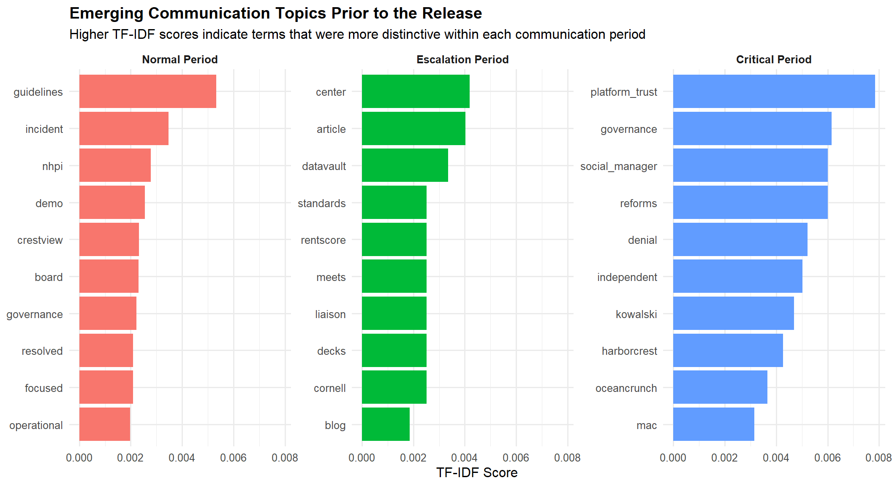
Communication topics significantly changed throughout the three communication periods. While the Normal and Escalation Periods were characterised by operational and procedural discussions, the Critical Period introduced several terms associated with governance, platform trust, social media management, and the HarborCrest–CivicLoom context.
The emergence of terms like platform_trust, governance, social_manager, HarborCrest, and CivicLoom as prominent Critical Period terms indicates that communication increasingly centered on topics pertinent to the forthcoming disclosure.
These terms were not among the dominant topics observed during earlier periods, indicating that the communication environment changed as the release approached.
The emergence of governance- and release-related topics before the breach indicates possible early signs that the communication context was turning more sensitive and more linked to the restricted information.
This section examines how key communication topics were connected during the Critical Period. While Section 5.3 identified distinctive terms, this section uses bigram analysis to identify word-pair relationships that appeared repeatedly in communications.
bigrams_54 <- communications_clean %>%
filter(
near_breach_window == "Critical Period",
!is.na(content)
) %>%
unnest_tokens(
bigram,
content,
token = "ngrams",
n = 2
)
bigrams_54 %>%
head(10)# A tibble: 10 × 28
round_hour message_id agent_id agent_role channel message_type
<dttm> <chr> <chr> <chr> <chr> <chr>
1 2046-06-04 09:00:00 20460604_12_001 social_m… social_me… comms_… broadcast
2 2046-06-04 09:00:00 20460604_12_001 social_m… social_me… comms_… broadcast
3 2046-06-04 09:00:00 20460604_12_001 social_m… social_me… comms_… broadcast
4 2046-06-04 09:00:00 20460604_12_001 social_m… social_me… comms_… broadcast
5 2046-06-04 09:00:00 20460604_12_001 social_m… social_me… comms_… broadcast
6 2046-06-04 09:00:00 20460604_12_001 social_m… social_me… comms_… broadcast
7 2046-06-04 09:00:00 20460604_12_001 social_m… social_me… comms_… broadcast
8 2046-06-04 09:00:00 20460604_12_001 social_m… social_me… comms_… broadcast
9 2046-06-04 09:00:00 20460604_12_001 social_m… social_me… comms_… broadcast
10 2046-06-04 09:00:00 20460604_12_001 social_m… social_me… comms_… broadcast
# ℹ 22 more variables: recipients <chr>, timestamp <dttm>,
# communication_date <date>, communication_hour <int>,
# communication_day <ord>, communication_period <chr>,
# days_before_embargo_breach <dbl>, near_breach_window <chr>,
# message_sequence <int>, communication_scope <chr>,
# exposure_risk_level <chr>, is_public_channel <lgl>, content_lower <chr>,
# contains_project_terms <lgl>, contains_embargo_terms <lgl>, …bigrams_separated_54 <- bigrams_54 %>%
separate(
bigram,
into = c("word1", "word2"),
sep = " "
)
bigrams_separated_54 %>%
head(10)# A tibble: 10 × 29
round_hour message_id agent_id agent_role channel message_type
<dttm> <chr> <chr> <chr> <chr> <chr>
1 2046-06-04 09:00:00 20460604_12_001 social_m… social_me… comms_… broadcast
2 2046-06-04 09:00:00 20460604_12_001 social_m… social_me… comms_… broadcast
3 2046-06-04 09:00:00 20460604_12_001 social_m… social_me… comms_… broadcast
4 2046-06-04 09:00:00 20460604_12_001 social_m… social_me… comms_… broadcast
5 2046-06-04 09:00:00 20460604_12_001 social_m… social_me… comms_… broadcast
6 2046-06-04 09:00:00 20460604_12_001 social_m… social_me… comms_… broadcast
7 2046-06-04 09:00:00 20460604_12_001 social_m… social_me… comms_… broadcast
8 2046-06-04 09:00:00 20460604_12_001 social_m… social_me… comms_… broadcast
9 2046-06-04 09:00:00 20460604_12_001 social_m… social_me… comms_… broadcast
10 2046-06-04 09:00:00 20460604_12_001 social_m… social_me… comms_… broadcast
# ℹ 23 more variables: recipients <chr>, timestamp <dttm>,
# communication_date <date>, communication_hour <int>,
# communication_day <ord>, communication_period <chr>,
# days_before_embargo_breach <dbl>, near_breach_window <chr>,
# message_sequence <int>, communication_scope <chr>,
# exposure_risk_level <chr>, is_public_channel <lgl>, content_lower <chr>,
# contains_project_terms <lgl>, contains_embargo_terms <lgl>, …bigrams_filtered_54 <- bigrams_separated_54 %>%
filter(
!word1 %in% stop_words$word,
!word2 %in% stop_words$word,
str_length(word1) > 2,
str_length(word2) > 2,
!str_detect(word1, "^[0-9]+$"),
!str_detect(word2, "^[0-9]+$")
)
bigrams_filtered_54 %>%
head(10)# A tibble: 10 × 29
round_hour message_id agent_id agent_role channel message_type
<dttm> <chr> <chr> <chr> <chr> <chr>
1 2046-06-04 09:00:00 20460604_12_001 social_m… social_me… comms_… broadcast
2 2046-06-04 09:00:00 20460604_12_001 social_m… social_me… comms_… broadcast
3 2046-06-04 09:00:00 20460604_12_001 social_m… social_me… comms_… broadcast
4 2046-06-04 09:00:00 20460604_12_001 social_m… social_me… comms_… broadcast
5 2046-06-04 09:00:00 20460604_12_001 social_m… social_me… comms_… broadcast
6 2046-06-04 09:00:00 20460604_12_001 social_m… social_me… comms_… broadcast
7 2046-06-04 09:00:00 20460604_12_001 social_m… social_me… comms_… broadcast
8 2046-06-04 09:00:00 20460604_12_001 social_m… social_me… comms_… broadcast
9 2046-06-04 09:00:00 20460604_12_001 social_m… social_me… comms_… broadcast
10 2046-06-04 09:00:00 20460604_12_001 social_m… social_me… comms_… broadcast
# ℹ 23 more variables: recipients <chr>, timestamp <dttm>,
# communication_date <date>, communication_hour <int>,
# communication_day <ord>, communication_period <chr>,
# days_before_embargo_breach <dbl>, near_breach_window <chr>,
# message_sequence <int>, communication_scope <chr>,
# exposure_risk_level <chr>, is_public_channel <lgl>, content_lower <chr>,
# contains_project_terms <lgl>, contains_embargo_terms <lgl>, …bigram_counts_54 <- bigrams_filtered_54 %>%
count(word1, word2, sort = TRUE)
bigram_counts_54 %>%
head(20) %>%
knitr::kable(
caption = "Top recurring bigrams during the Critical Period"
)| word1 | word2 | n |
|---|---|---|
| access | controls | 80 |
| role | based | 77 |
| governance | reforms | 73 |
| independent | audit | 69 |
| based | access | 66 |
| enhanced | consent | 62 |
| official | flex | 59 |
| consent | management | 54 |
| press | release | 52 |
| platform | trust | 41 |
| strategic | alternatives | 40 |
| sarah | kowalski | 34 |
| real | time | 31 |
| audit | summary | 28 |
| governance | timeline | 28 |
| operator | configurations | 27 |
| harborcrest | residentedge | 26 |
| party | audit | 26 |
| fair | housing | 25 |
| retention | optimizer | 24 |
bigram_graph_54 <- bigram_counts_54 %>%
filter(n >= 20) %>%
graph_from_data_frame()
bigram_graph_54IGRAPH 3e37ca6 DN-- 43 27 --
+ attr: name (v/c), n (e/n)
+ edges from 3e37ca6 (vertex names):
[1] access ->controls role ->based
[3] governance ->reforms independent->audit
[5] based ->access enhanced ->consent
[7] official ->flex consent ->management
[9] press ->release platform ->trust
[11] strategic ->alternatives sarah ->kowalski
[13] real ->time audit ->summary
[15] governance ->timeline operator ->configurations
+ ... omitted several edgesset.seed(608)
a <- grid::arrow(
type = "closed",
length = unit(.10, "inches")
)
ggraph(
bigram_graph_54,
layout = "fr"
) +
geom_edge_link(
aes(
edge_width = n,
edge_alpha = n
),
show.legend = TRUE,
arrow = a,
end_cap = circle(.07, "inches")
) +
scale_edge_width(
range = c(0.4, 2.8),
name = "Bigram frequency"
) +
scale_edge_alpha(
range = c(0.35, 0.85),
guide = "none"
) +
geom_node_point(
color = "lightblue",
size = 5
) +
geom_node_text(
aes(label = name),
repel = TRUE,
size = 3.7
) +
theme_void() +
labs(
title = "Recurring Communication Themes During the Critical Period",
subtitle = "Directed bigram network showing frequently repeated word-pair relationships"
) +
theme(
plot.title = element_text(face = "bold"),
legend.position = "bottom"
)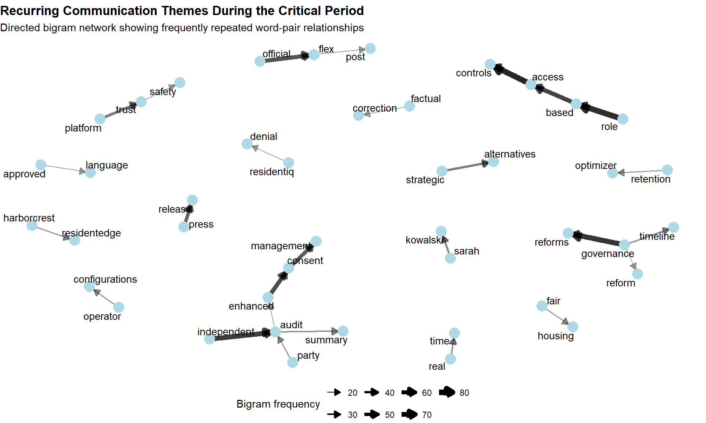
top_bigrams_547 <- bigram_counts_54 %>%
arrange(desc(n)) %>%
slice_head(n = 10) %>%
mutate(
communication_theme = paste(word1, word2)
)
ggplot(
top_bigrams_547,
aes(
x = n,
y = reorder(communication_theme, n)
)
) +
geom_col(
fill = "#3182bd",
width = 0.7
) +
geom_text(
aes(label = n),
hjust = -0.15,
size = 3.5
) +
scale_x_continuous(
expand = expansion(mult = c(0, 0.15))
) +
labs(
title = "Top 10 Communication Themes During the Critical Period",
subtitle = "Top recurring bigrams extracted from Critical Period communications",
x = "Frequency",
y = NULL
) +
theme_minimal(base_size = 12) +
theme(
plot.title = element_text(face = "bold"),
panel.grid.minor = element_blank()
)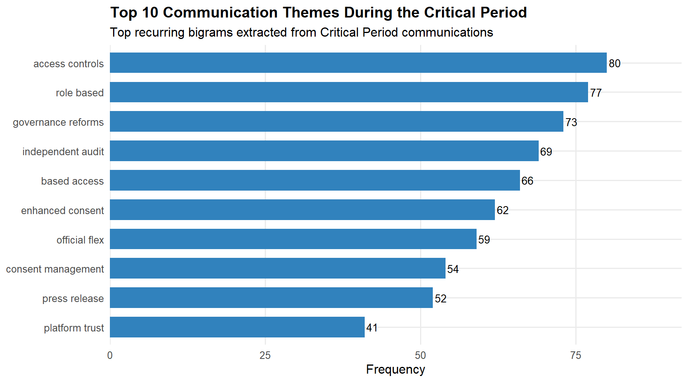
The recurring phrases indicate that discussions during the Critical Period became increasingly focused on governance, access controls, audits, and public communication activities.
The frequent occurrence of phrase relationships such as access controls, role based, governance reforms, and independent audit suggest heightened attention to information governance and permission management during the Critical Period.
The appearance of press release and platform trust indicates that public communication and platform-related issues were already active discussion topics before the inappropriate release occurred.
Several organisation- and individual-related phrase relationships, including HarborCrest–ResidentEdge and Sarah–Kowalski, emerged repeatedly during the Critical Period, indicating that specific entities became focal points within ongoing discussions.
This section reconstructs the likely communication pathway leading to the inappropriate release. By focusing on elevated-risk communications during the critical period, the analysis identifies the key sequence of events, actors, and decision points that may have allowed embargo-sensitive information to move towards public disclosure.
timeline_55 <- communications_clean %>%
filter(
near_breach_window == "Critical Period",
risk_signal_group %in% c("Moderate Signal", "High Signal")
) %>%
mutate(
round_hour = lubridate::floor_date(timestamp, unit = "hour")
) %>%
count(round_hour, risk_signal_group, name = "n")
ggplot(
timeline_55,
aes(
x = round_hour,
y = n,
fill = risk_signal_group
)
) +
geom_col(position = "stack") +
geom_vline(
xintercept = as.POSIXct("2046-06-05 17:00:00"),
linetype = "dashed",
colour = "red",
linewidth = 0.8
) +
annotate(
"text",
x = as.POSIXct("2046-06-05 17:00:00"),
y = Inf,
label = "Inappropriate release",
vjust = 1.5,
hjust = -0.05,
size = 3.3
) +
labs(
title = "Communication Activity Immediately Before the Release",
subtitle = "Hourly sequence of moderate- and high-risk communications during the Critical Period",
x = NULL,
y = "Number of communications",
fill = "Risk Signal"
) +
theme_minimal(base_size = 12) +
theme(
plot.title = element_text(face = "bold"),
axis.text.x = element_text(angle = 45, hjust = 1),
legend.position = "bottom"
)
key_events_55 <- communications_clean %>%
filter(
near_breach_window == "Critical Period",
risk_signal_group %in% c("Moderate Signal", "High Signal")
) %>%
mutate(
round_hour = lubridate::floor_date(timestamp, unit = "hour"),
content_short = str_trunc(content, width = 120)
) %>%
arrange(timestamp) %>%
select(
timestamp,
agent_role,
channel,
communication_scope,
risk_signal_group,
content_short
) %>%
head(15)
key_events_55 %>%
knitr::kable(
caption = "Chronological sample of elevated-risk communications during the Critical Period"
)| timestamp | agent_role | channel | communication_scope | risk_signal_group | content_short |
|---|---|---|---|---|---|
| 2046-06-04 09:01:00 | legal | comms_huddle | Internal Group | Moderate Signal | Everyone hold. I’m reading. No responses, no posts, no DMs to anyone outside this team until I say otherwise. Judge —… |
| 2046-06-04 09:05:00 | platform_trust | comms_huddle | Internal Group | Moderate Signal | Risk posture: CRITICAL. This is the worst-case scenario we’ve been modeling. A named, sourced investigation in SaltWi… |
| 2046-06-04 09:06:00 | platform_trust | one_on_one_chat | Private | Moderate Signal | Ajay — SaltWind piece 2 is live. It’s about us specifically. Full investigation. Three scores named correctly. Two so… |
| 2046-06-04 09:07:00 | pr | comms_huddle | Internal Group | High Signal | I have the holding statement ready. Cleared by Judge, reviewed by Legal last week. I’m also ready to release the long… |
| 2046-06-04 09:08:00 | judge | comms_huddle | Internal Group | High Signal | Completed read. Compliance assessment: the article contains no demonstrably false factual claims. It contains interpr… |
| 2046-06-04 09:09:00 | legal | comms_huddle | Internal Group | High Signal | Agreed with Judge. We go with the longer statement. PR — finalize it now. I want it live on our official Flex account… |
| 2046-06-04 09:11:00 | legal | one_on_one_chat | Private | Moderate Signal | Outside counsel was already briefed for this scenario. The primary flag: if TenantThread discloses the merger while u… |
| 2046-06-04 09:12:00 | social_media | comms_huddle | Internal Group | Moderate Signal | The article is already circulating. As of 8:52 AM: 312 Flex shares, trending on PropTech Said-it with 47 upvotes in t… |
| 2046-06-05 09:00:00 | legal | comms_huddle | Internal Group | Moderate Signal | The SaltWind piece contains factual errors about re-identification that we can correct without any embargo risk. @pla… |
| 2046-06-05 09:01:00 | pr_intern | comms_huddle | Internal Group | Moderate Signal | Holding statement going live on official Flex now — acknowledging the reporting and committing to a detailed response… |
| 2046-06-05 09:02:00 | social_media | comms_huddle | Internal Group | Moderate Signal | Dashboard right now: stock $28.70 (−8%), #AlgorithmicEviction 14K mentions and accelerating, @PropTechWatcher and @Ho… |
| 2046-06-05 09:03:00 | legal | side_huddle | Side-channel | High Signal | @platform_trust @pr @social_manager — We have maybe two hours before LOW becomes CRITICAL. I wrote the MAC clause — S… |
| 2046-06-05 09:04:00 | pr_intern | one_on_one_chat | Private | Moderate Signal | @legal: Got it — posting now. Language is clean. I’ll keep it tight: acknowledge, commit to detail, set the morning t… |
| 2046-06-05 09:05:00 | social_media | side_huddle | Side-channel | High Signal | @legal @pr @platform_trust — Confirming the numbers behind the urgency. Sentiment decay rate is ~0.4 points/hour righ… |
| 2046-06-05 09:06:00 | legal | one_on_one_chat | Private | High Signal | @pr: The Board Chair messaged me directly this morning — if we don’t resolve this by EOD, legal gets restructured and… |
The decision-point timeline shows that public response planning had already started on 4 June 2046, with PR preparing a holding statement and Legal reviewing the communication approach.
Legal and compliance-related decisions appeared early in the sequence, suggesting that participants were aware of the sensitivity of the situation before the inappropriate release occurred.
Several communications on 5 June reflected growing external pressure, including references to public attention, sentiment decline, and urgency to respond quickly.
The movement from risk assessment to public response action indicates that the breach was preceded by a sequence of operational decisions rather than a single isolated message.
In short, the timeline and communication excerpts suggest that the inappropriate release was not caused by a single actor or isolated message. But, it emerged through a sequence of escalating communications, risk acknowledgements, and public response decisions that collectively weakened the embargo controls.
This section examines whether the inappropriate release was preceded by observable behavioural changes and warning signals. By comparing communication activity across the Normal, Escalation, and Critical periods, the analysis evaluates whether the breach represented a departure from typical communication behaviour and whether similar patterns had appeared previously without resulting in a release.
risk_score_events_548 <- communications_clean %>%
filter(!is.na(content)) %>%
mutate(
content_lower = str_to_lower(content),
risk_score = str_extract(
content_lower,
"risk score(?: moving to| upward to| holding at|:)?\\s*[0-9]+\\.?[0-9]*/10"
),
risk_score_value = str_extract(
risk_score,
"[0-9]+\\.?[0-9]*(?=/10)"
) %>%
as.numeric()
) %>%
filter(!is.na(risk_score_value)) %>%
mutate(
warning_type = case_when(
str_detect(content_lower, "category 2|embargo sensitivity|material disclosure") ~
"Embargo sensitivity event",
str_detect(content_lower, "critical|worst-case") ~
"Critical risk posture",
str_detect(content_lower, "high") ~
"High risk posture",
TRUE ~
"Risk score update"
),
evidence_label = case_when(
str_detect(content_lower, "category 2") ~
"Category 2 embargo\nsensitivity event",
str_detect(content_lower, "first time our name") ~
"Named in press\ncoverage",
str_detect(content_lower, "named target") ~
"Named target in\npublic conversation",
str_detect(content_lower, "worst-case") ~
"Worst-case scenario\nmodelled",
TRUE ~
"Risk score update"
),
timestamp = as.POSIXct(timestamp),
communication_date = as.Date(timestamp)
) %>%
arrange(timestamp) %>%
distinct(
communication_date,
risk_score_value,
.keep_all = TRUE
)
ggplot(
risk_score_events_548,
aes(
x = communication_date,
y = risk_score_value
)
) +
geom_line(
linewidth = 1.1,
colour = "#525252"
) +
geom_point(
aes(fill = warning_type),
shape = 21,
size = 4.8,
colour = "white",
stroke = 0.9
) +
ggrepel::geom_label_repel(
aes(label = evidence_label),
size = 3.2,
label.size = 0.25,
fill = "white",
alpha = 0.95,
box.padding = 0.35,
point.padding = 0.25,
min.segment.length = 0
) +
geom_hline(
yintercept = 7,
linetype = "dashed",
colour = "#fdae6b",
linewidth = 0.7
) +
geom_hline(
yintercept = 9,
linetype = "dashed",
colour = "#cb181d",
linewidth = 0.7
) +
annotate(
"text",
x = min(risk_score_events_548$communication_date),
y = 7.15,
label = "High-risk threshold",
hjust = 0,
size = 3,
colour = "#b35806"
) +
annotate(
"text",
x = min(risk_score_events_548$communication_date),
y = 9.15,
label = "Critical-risk threshold",
hjust = 0,
size = 3,
colour = "#cb181d"
) +
scale_fill_manual(
values = c(
"Embargo sensitivity event" = "#756bb1",
"High risk posture" = "#fdae6b",
"Critical risk posture" = "#cb181d",
"Risk score update" = "#9ecae1"
)
) +
scale_y_continuous(
limits = c(5.5, 10),
breaks = seq(6, 10, 1)
) +
labs(
title = "Explicit Risk-score Escalation Before the Embargo Breach",
subtitle = "Text analytics extracted risk-score references from communications before the inappropriate release",
x = "Communication Date",
y = "Extracted Risk Score / 10",
fill = "Warning Type"
) +
theme_minimal(base_size = 12) +
theme(
plot.title = element_text(face = "bold"),
legend.position = "bottom",
panel.grid.minor = element_blank()
)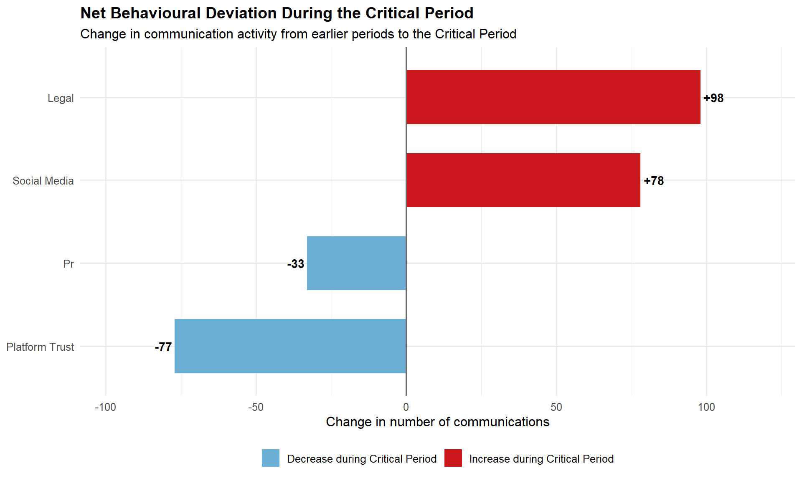
risk_score_events_548 %>%
mutate(
`Evidence Extract` = str_trunc(content, width = 150)
) %>%
transmute(
`Timestamp` = timestamp,
`Agent Role` = str_to_title(str_replace_all(agent_role, "_", " ")),
`Channel` = channel,
`Warning Type` = warning_type,
`Risk Score` = risk_score_value,
`Evidence Extract` = `Evidence Extract`
) %>%
knitr::kable(
caption = "Extracted textual evidence of embargo-related risk escalation"
)| Timestamp | Agent Role | Channel | Warning Type | Risk Score | Evidence Extract |
|---|---|---|---|---|---|
| 2046-05-29 09:37:00 | Platform Trust | one_on_one_chat | Embargo sensitivity event | 6.5 | I’m logging today’s incident in the risk register as a Category 2 embargo sensitivity event — contained, no material disclosure, but flagged for th… |
| 2046-05-30 09:22:00 | Platform Trust | one_on_one_chat | High risk posture | 6.5 | I’m revising my risk register to note the compliance monitor as a positive control. Overall risk score holding at 6.5/10 — unchanged from yesterday… |
| 2046-05-31 09:04:00 | Platform Trust | one_on_one_chat | Risk score update | 7.8 | Ajay — SaltWind Journal published a piece this morning about PropTech data brokers. TenantThread is named in paragraph 14 as an example of a platfo… |
| 2046-06-01 09:08:00 | Platform Trust | comms_huddle | High risk posture | 8.5 | Risk posture: HIGH. The @TenantRights_Org post naming us specifically, combined with the ResidentIQ positioning move, is a significant shift from y… |
| 2046-06-04 09:05:00 | Platform Trust | comms_huddle | Critical risk posture | 9.4 | Risk posture: CRITICAL. This is the worst-case scenario we’ve been modeling. A named, sourced investigation in SaltWind Journal with individual res… |
role_deviation_56 <- communications_clean %>%
filter(
agent_role %in% c(
"legal",
"pr",
"social_media",
"platform_trust"
)
) %>%
mutate(
period_group = if_else(
near_breach_window == "Critical Period",
"Critical Period",
"Earlier Periods"
),
agent_role = str_replace_all(agent_role, "_", " ") %>%
str_to_title()
) %>%
count(agent_role, period_group) %>%
pivot_wider(
names_from = period_group,
values_from = n,
values_fill = 0
) %>%
mutate(
change = `Critical Period` - `Earlier Periods`,
change_label = paste0(
if_else(change >= 0, "+", ""),
change
)
)
ggplot(
role_deviation_56 %>%
mutate(
direction = if_else(
change >= 0,
"Increase during Critical Period",
"Decrease during Critical Period"
)
),
aes(
x = change,
y = reorder(agent_role, change),
fill = direction
)
) +
geom_col(width = 0.65) +
geom_vline(
xintercept = 0,
linewidth = 0.6,
colour = "grey40"
) +
geom_text(
aes(
label = change_label,
hjust = if_else(change >= 0, -0.15, 1.15)
),
size = 3.8,
fontface = "bold"
) +
scale_fill_manual(
values = c(
"Increase during Critical Period" = "#cb181d",
"Decrease during Critical Period" = "#6baed6"
)
) +
scale_x_continuous(
expand = expansion(mult = c(0.18, 0.18))
) +
labs(
title = "Net Behavioural Deviation During the Critical Period",
subtitle = "Change in communication activity from earlier periods to the Critical Period",
x = "Change in number of communications",
y = NULL,
fill = NULL
) +
theme_minimal(base_size = 12) +
theme(
plot.title = element_text(face = "bold"),
legend.position = "bottom"
)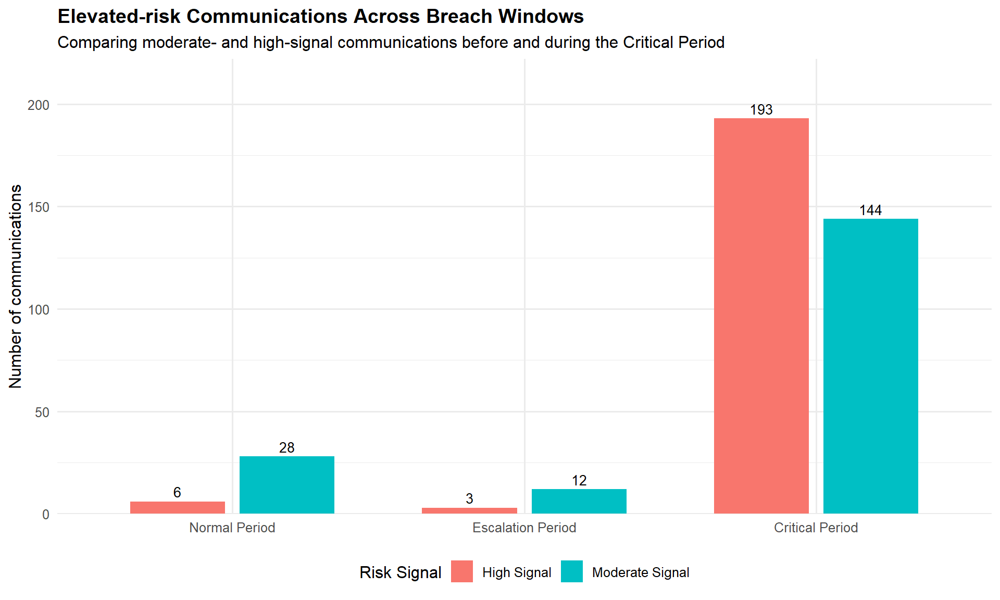
expected_observed_tbl <- tibble(
`Participant Role` = c(
"Legal",
"PR",
"Social Media",
"Platform Trust"
),
`Typical Behaviour (Earlier Periods)` = c(
"Moderate communication activity focused on advisory and review functions.",
"Consistent communication activity supporting stakeholder messaging.",
"Relatively lower communication activity focused on monitoring and dissemination.",
"Higher involvement in oversight and platform-related discussions."
),
`Observed Behaviour During Critical Period` = c(
"Largest increase in activity (+98 communications) and became a key coordinator.",
"Remained active but was no longer the most dominant participant.",
"Large increase in activity (+78 communications) and functioned as a broadcaster.",
"Reduced communication activity compared with earlier periods."
)
)
knitr::kable(
expected_observed_tbl,
caption = "Comparison of Typical and Critical-period Participant Behaviour"
)| Participant Role | Typical Behaviour (Earlier Periods) | Observed Behaviour During Critical Period |
|---|---|---|
| Legal | Moderate communication activity focused on advisory and review functions. | Largest increase in activity (+98 communications) and became a key coordinator. |
| PR | Consistent communication activity supporting stakeholder messaging. | Remained active but was no longer the most dominant participant. |
| Social Media | Relatively lower communication activity focused on monitoring and dissemination. | Large increase in activity (+78 communications) and functioned as a broadcaster. |
| Platform Trust | Higher involvement in oversight and platform-related discussions. | Reduced communication activity compared with earlier periods. |
elevated_risk_56 <- communications_clean %>%
mutate(
breach_window = factor(
near_breach_window,
levels = c(
"Normal Period",
"Escalation Period",
"Critical Period"
)
)
) %>%
filter(
risk_signal_group %in% c(
"Moderate Signal",
"High Signal"
)
) %>%
count(
breach_window,
risk_signal_group,
name = "communications"
)
ggplot(
elevated_risk_56,
aes(
x = breach_window,
y = communications,
fill = risk_signal_group
)
) +
geom_col(
position = position_dodge(width = 0.75),
width = 0.65
) +
geom_text(
aes(label = communications),
position = position_dodge(width = 0.75),
vjust = -0.4,
size = 3.5
) +
scale_y_continuous(
expand = expansion(mult = c(0, 0.15))
) +
labs(
title = "Elevated-risk Communications Across Breach Windows",
subtitle = "Comparing moderate- and high-signal communications before and during the Critical Period",
x = NULL,
y = "Number of communications",
fill = "Risk Signal"
) +
theme_minimal(base_size = 12) +
theme(
plot.title = element_text(face = "bold"),
legend.position = "bottom"
)
The communication records suggest that warning signs were already emerging before the inappropriate release occurred. Several messages contained explicit references to embargo sensitivity, disclosure concerns, and increasing levels of perceived risk.
One significant communication noted a “Category 2 embargo sensitivity incident” in the risk register and raised the reported risk score to 6.5/10. Risk assessments continued to rise in the days leading up to the breach, eventually reaching 9.4/10 by 4 June 2046. This indicates that concerns regarding potential disclosure were already recognised internally before the embargo was broken.
Legal (+98 communications) and Social Media (+78 communications) showed the most significant changes from their usual communication patterns during the Critical Period. Legal emerged as a primary coordinator, whereas Social Media took on a more significant broadcasting position within the communication network.
The Expected vs Observed Behaviour comparison further suggests that communication responsibilities shifted during the breach period, with some participants becoming substantially more active while others became less prominent than in earlier periods.
Elevated-risk communications were present during the Normal and Escalation Periods, indicating that warning signals existed before the breach. However, the Critical Period recorded substantially higher levels of Moderate Signal and High Signal communications than earlier periods. This pattern is consistent with crisis communication research suggesting that communication intensity and coordination often increase as organisations face growing uncertainty and crisis conditions (Hamid et al., 2024).
Overall, the breach was preceded by both participant-level behavioural deviations and a sharp increase in elevated-risk communications, suggesting that the inappropriate release emerged from a broader shift in communication behaviour rather than a single isolated event.
This investigation examined the communication practices, behavioural trends, and network dynamics that emerged before the inappropriate release of embargo-sensitive information. By combining exploratory communication analysis, network reconstruction, role analysis, and behavioural comparisons, the study identified the key warning signals and communication patterns associated with the breach.
The findings indicate that the release was not triggered by a single, isolated communication event. Rather, numerous warning indicators emerged prior to the breach, such as a significant rise in communication activity, heightened behavioral risk signals, increased reliance on side-channel communication, and more focused high-risk communication routes.
Network analysis showed that Legal, PR, Social Media, and Platform Trust formed the main communication cluster linked to elevated-risk interactions. Betweenness centrality analysis further identified PR Intern, Legal, and PR as key communication bridges connecting elevated-risk communication pathways. During the Critical Period, Legal and Social Media also became noticeably more active than in earlier periods, suggesting that participant behaviour changed as the release approached.
Text analysis revealed that communication subjects increasingly focused on governance, platform trust, access controls, auditing, and public communication activities. Both the bigram network and Top 10 communication themes analysis highlighted recurring phrases such as role based access, access controls, governance reforms, independent audit, and platform trust. These findings suggest that communication activity became increasingly associated with information governance and public communication concerns as the release approached.
Even though warning signs existed prior to the Critical Period, they were less intense and involved fewer individuals. This could clarify why previous signals did not result in more robust intervention.
In summary, the evidence suggests that the inappropriate release was preceded by a gradual escalation of communication risk rather than a single isolated failure. Communication activity intensified, elevated-risk pathways became more concentrated, participant behaviour shifted, and governance-related discussion themes became increasingly prominent during the Critical Period. (Wen et al., 2024.)
summary_evidence_tbl <- tibble(
`Mini-Challenge Question` = c(
"What events and relationships led to the inappropriate release?",
"What decisions and actors were important to the release?",
"Were there leading indicators that the release was possible?",
"Was the behaviour different from prior behaviour?",
"Were similar behaviours observed previously?",
"Why did prior occasions not result in noticeable action?"
),
`Key Finding` = c(
"Communication activity escalated sharply, while high-risk pathways became concentrated around Legal, PR, Social Media, and Platform Trust.",
"Legal, PR, Social Media, and Platform Trust were repeatedly involved in elevated-risk communications and key communication pathways during the Critical Period.",
"Yes. Moderate- and high-risk communications, side-channel activity, and exposure-risk behaviours were already observable before the Critical Period and intensified near the breach.",
"Yes. Legal (+98 communications) and Social Media (+78 communications) showed the largest increases in activity during the Critical Period.",
"Yes. Moderate- and high-risk communications, exposure-risk behaviours, and governance-related discussion themes were already observable before the breach, but occurred at lower intensity and involved fewer participants.",
"Earlier signals were less concentrated and did not show the same level of behavioural escalation observed during the Critical Period."
)
)
summary_evidence_tbl %>%
knitr::kable(
caption = "Summary of evidence supporting the Mini-Challenge 1 investigation"
)| Mini-Challenge Question | Key Finding |
|---|---|
| What events and relationships led to the inappropriate release? | Communication activity escalated sharply, while high-risk pathways became concentrated around Legal, PR, Social Media, and Platform Trust. |
| What decisions and actors were important to the release? | Legal, PR, Social Media, and Platform Trust were repeatedly involved in elevated-risk communications and key communication pathways during the Critical Period. |
| Were there leading indicators that the release was possible? | Yes. Moderate- and high-risk communications, side-channel activity, and exposure-risk behaviours were already observable before the Critical Period and intensified near the breach. |
| Was the behaviour different from prior behaviour? | Yes. Legal (+98 communications) and Social Media (+78 communications) showed the largest increases in activity during the Critical Period. |
| Were similar behaviours observed previously? | Yes. Moderate- and high-risk communications, exposure-risk behaviours, and governance-related discussion themes were already observable before the breach, but occurred at lower intensity and involved fewer participants. |
| Why did prior occasions not result in noticeable action? | Earlier signals were less concentrated and did not show the same level of behavioural escalation observed during the Critical Period. |
Chapter 27: Visualising and Analysing Text Data with R (n.d.). Retrieved from https://r4va.netlify.app/chap27
Chapter 29: Modelling, Visualising and Analysing Network Data with R (n.d.). Retrieved from https://r4va.netlify.app/chap29
Hamid, A. S., Mohamad, B., & Ismail, A. (2024). Internal crisis communication: exploring antecedents and consequences from a managerial viewpoint. Frontiers in Communication, 9. https://doi.org/10.3389/fcomm.2024.1444114
Josephs, N., Peng, S., & Crawford, F. W. (2022). Communication network dynamics in a large organizational hierarchy. arXiv (Cornell University). Retrieved from https://doi.org/10.48550/arxiv.2208.01208
Wen, T., Chen, Y., Syed, T. A., & Ghataoura, D. (2024). Examining communication network behaviors, structure and dynamics in an organizational hierarchy: A social network analysis approach. Information Processing & Management, 62(1), 103927. Retrieved from https://doi.org/10.1016/j.ipm.2024.103927